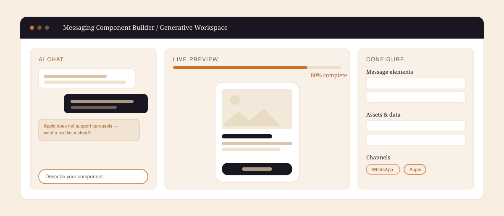
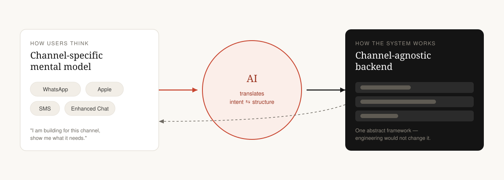
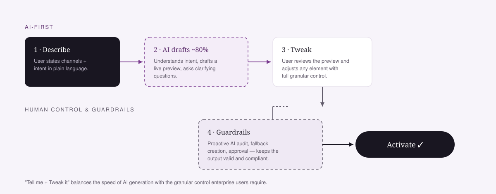
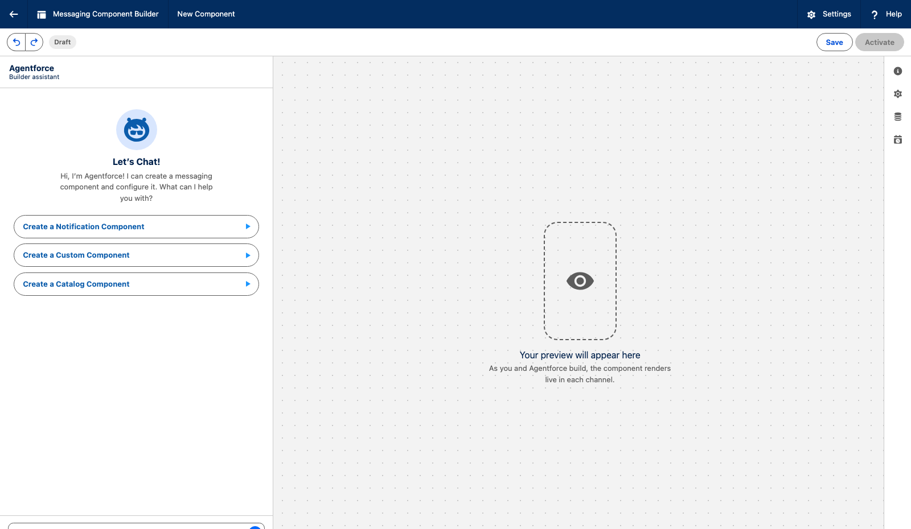
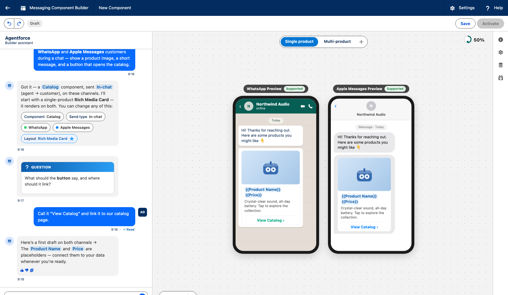
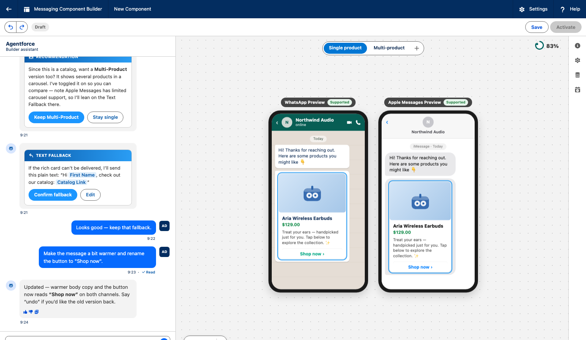
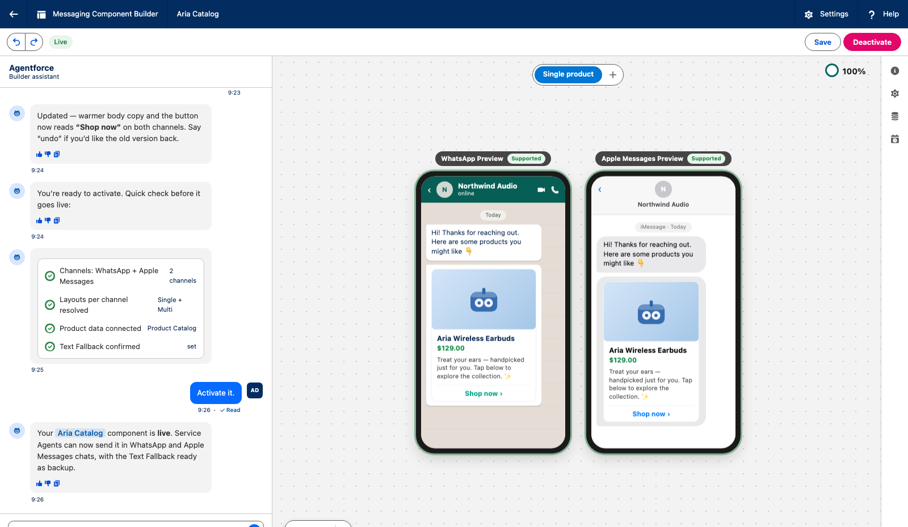

Salesforce · Service Cloud · 2026 · Confidential
Messaging Component Builder: an agentic builder.
A redesign of a painful, engineer-built legacy tool into an AI-first workspace. This is a research and data-driven vision.

The problem
The legacy builder exposed a channel-agnostic system to people who think channel-first. Creating rich messaging components meant documentation, guesswork, and repeated trial and error.
My role
Lead designer. I turned heuristic and usability findings into cross-functional alignment, then defined the AI-first north star and a practical path towards it.
The problem
A tool that fought the people who relied on it.
A heuristic evaluation and user testing showed the builder was failing the people who used it most. Users think channel-first. The tool didn’t. Like a lot of legacy tools, it had been built by engineers, so the UX followed the system’s structure, not the person’s.
Engineer-built legacy UI
Outdated interactions, inconsistent patterns, and a lot of looking things up in docs.
Mental-model mismatch
Users think channel-first. The backend is channel-agnostic. That gap was the real problem.
Trial-and-error
People weren’t sure how a component would behave, so they hesitated and clicked around.
Grounding it in evidence
I put the pain in numbers first.
In my moderated study of the existing tool, task success was near-zero without help. That made the case for a redesign. A 10-point Nielsen heuristic audit turned scattered complaints into a ranked list we could argue from.
“The tool is not intuitive.”Moderated session participant
“Let the system handle the complexity, not the user.”Moderated session participant
Process
Evidence, then alignment, then vision.
I started with what was broken, got the room aligned, and only then drew a concept. The vision came last, not first.
- 01
Audit
Ran a 10-point heuristic evaluation on the existing builder to prioritise the real problems.
- 02
Test
8 moderated sessions across 4 personas and 6 countries surfaced where and why builders stalled.
- 03
Align
Workshops with design, PM, and engineering turned evidence into How-Might-We statements and buy-in.
- 04
Envision
Only then designed the north star: a generative AI workspace with a human in the loop.
- 05
Chart next
Mapped a path from today to that vision, including a mid-solution the team could actually ship.
Facilitation
This only worked as a group.
Design, PM, and engineering sat in the same rooms. We went broad with peers, then narrow on feasibility. AI tools helped us ideate fast, not skip the argument.
The vision
A generative AI workspace.
Rather than patch the old UI, I made the case for a redesign built on a “Tell me + Tweak it” model: the AI gets you ~80% of the way from a plain-language prompt, then you refine with full control. Three principles anchored it.
Channel-specific
You say where the message is going, and the UI adapts. That matches how people already think.
Simple system
Let the system handle complexity. Keep navigation simple, flexible, and predictable.
Consumer-grade
A clean UI, a live preview, and guidance in context instead of a manual.
The key trade-off
AI as the translator between user and system.
The current system was built around a channel-agnostic backend, and engineering was not going to change that architecture. Users still think channel-first. I didn’t pick a side. AI does the translation between what the person wants and how the system is structured, so we could move the experience without rewriting the backend.

The flow
“Tell me + Tweak it.”

Describe
The user states intent in plain language, channel-first, the way they already think.
AI drafts ~80%
The model produces a working first draft against the channel-agnostic backend.
Human tweaks
The remaining nuance, exceptions, and brand voice stay a human edit.
Guardrails
Audit, fallback, and approval run before anything activates.
Prototype walkthrough
The workspace, one prompt at a time.
A working prototype carried the vision from a blank prompt to a live, editable component.




Screens are blurred for confidentiality — the full walkthrough and working prototype are shared live in interviews.
Outcome
Direction and buy-in, not launch metrics.
Design, PM, and engineering aligned on the problem and the direction. A prioritised audit and testing findings still sit under the roadmap.
Parts of this direction moved into the product. The walkthrough is for the interview.
Closing
What I took from this.
Evidence persuades
A vision lands when it sits on what real users actually struggle with. So I diagnosed first.
Design with the constraints
AI became the bridge between a fixed backend and how users think. Both sides stayed intact.
Vision is a tool
Its job was to get alignment and a path forward. That’s what it did.
This is the vision, not the release. The prototype and what engineering took forward are for the interview.
More work